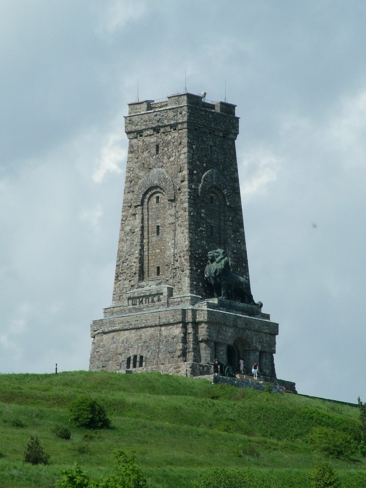
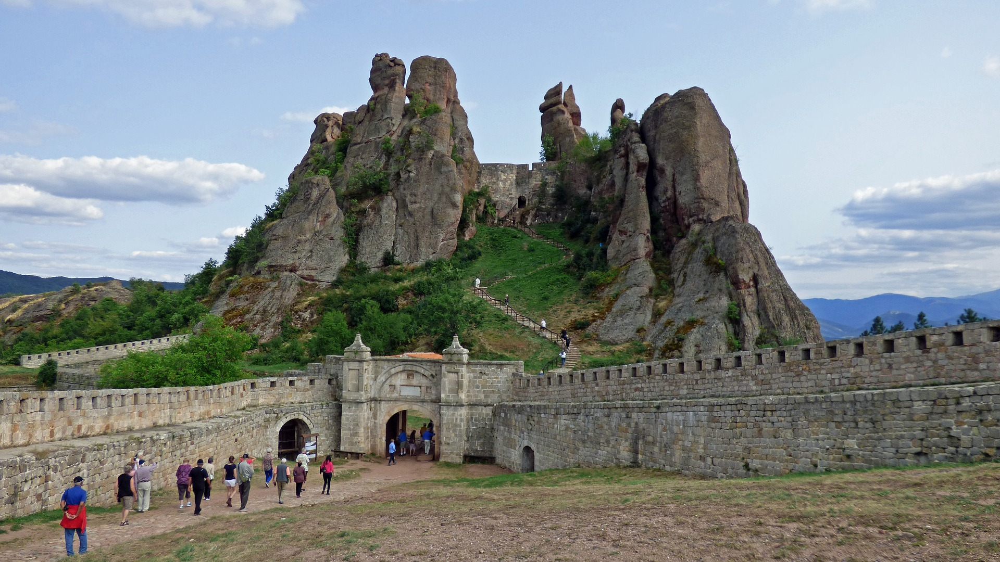

Главен координатор и координатор по икономическите политики: Иван Иванов Иванов
Главен координатор и координатор по икономическите политики: Иван Иванов ИвановКоординатор на политиките по вътрешни работи: Стоян Каменов Дуваров
Координатор на политиките по национална сигурност и отбрана: Бойко Войников Армейски
Главен координатор и координатор по икономическите политики: Иван Иванов Иванов Координатор на политиките за наука и култура: Сократ Аристотелов Платонов
Координатор на политиките за наука и култура: Сократ Аристотелов Платонов Координатор на политиките за образование: Никола Априлов Даскалов
Координатор на политиките за образование: Никола Априлов Даскалов Координатор на политиките за външна политика: Снакс Аргиров Макнински
Координатор на политиките за външна политика: Снакс Аргиров Макнински Координатор на политиките за транспорт: Елена Тодорова Рудолф
Координатор на политиките за транспорт: Елена Тодорова Рудолф Координатор на политиките за селско стопанство: Ибрахим Али Коч
Координатор на политиките за селско стопанство: Ибрахим Али Коч Координатор на политиките за енергетика и екология: Горица Букова Дъбова
Координатор на политиките за енергетика и екология: Горица Букова Дъбова